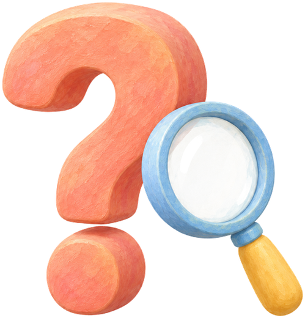
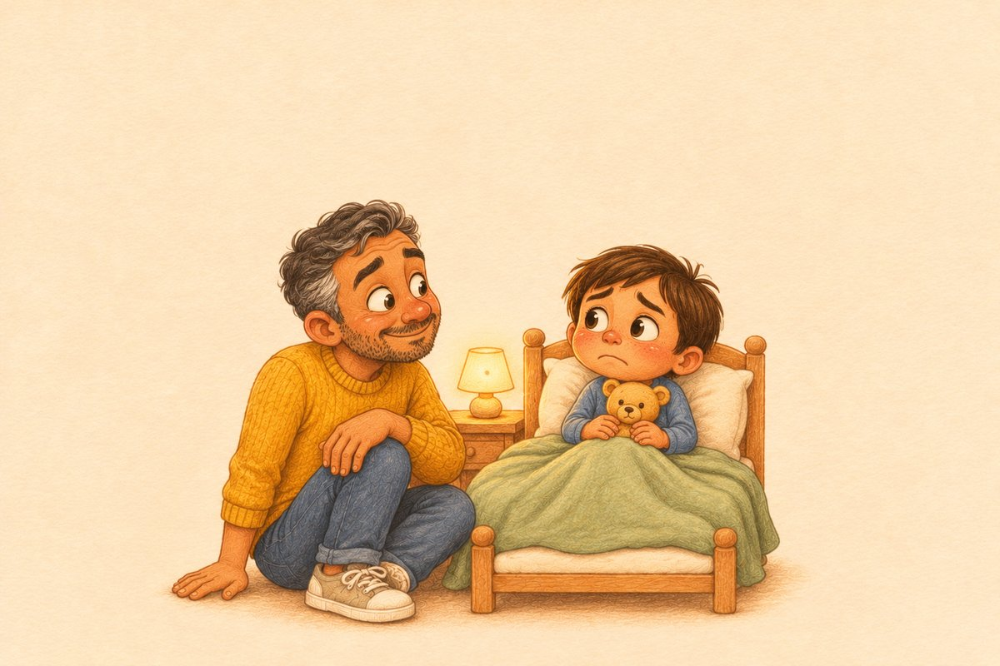
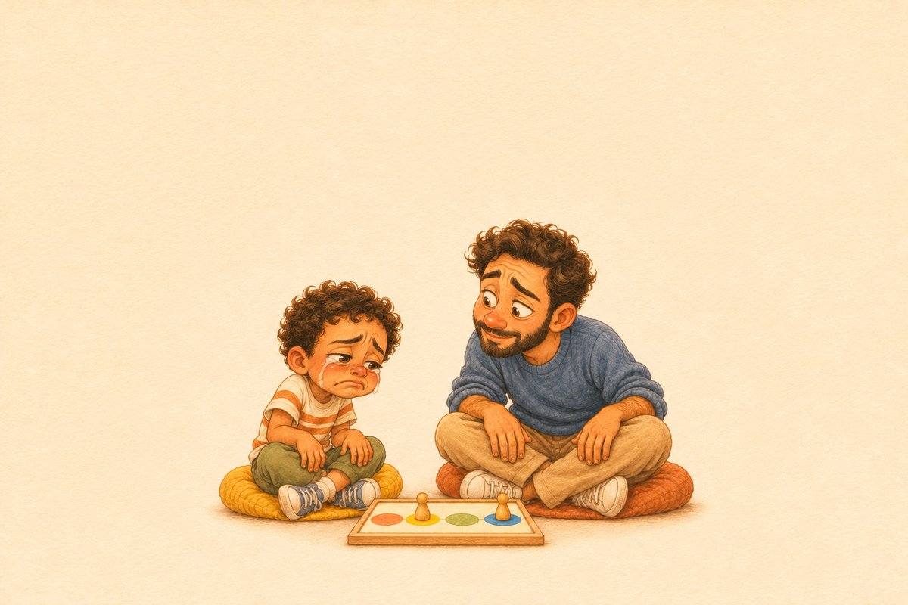
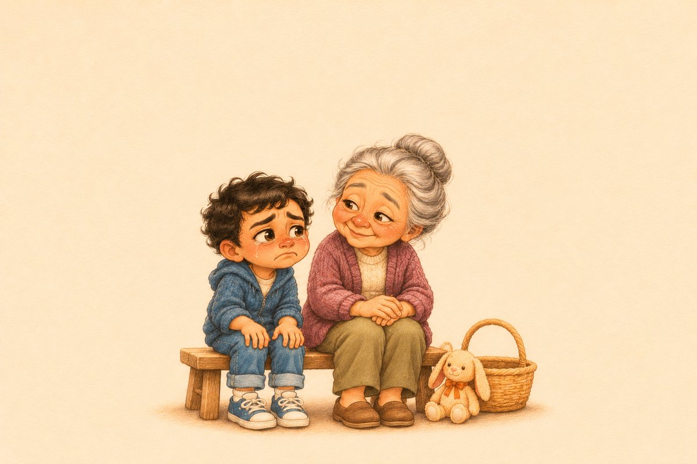
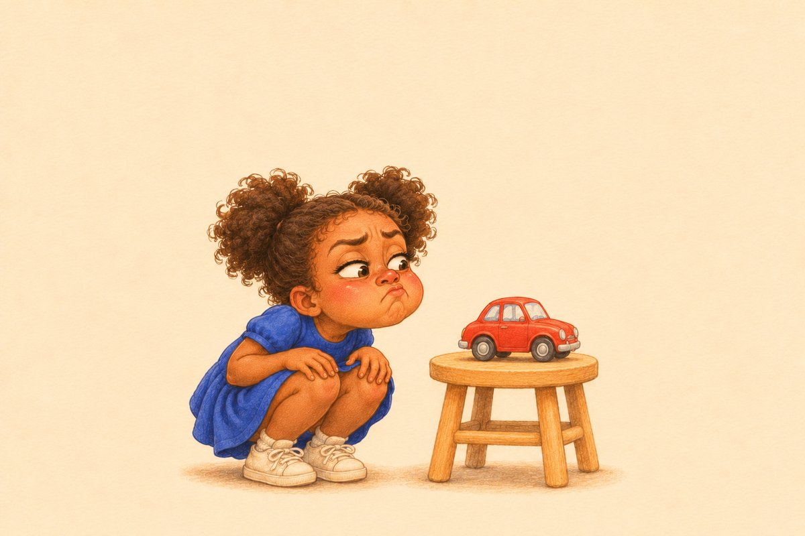

Paper, questions and little wonders
Real questions, kind tips and fun ideas for curious kids and their grown-ups.
- 👋 Welcome to Ophelia’s Little Wonders! Thank you for stopping by.
- ❓ Kids’ big questions · 💛 little feelings · 🏡 tips for parents and classrooms

For curious kids
Real questions kids ask about animals, space, bodies and more.
Short, simple answers, each one checked with trusted sources.
For parents
Why kids do what they do, and how to help with their big feelings.
Research-based tips and kind notes for tired grown-ups.
💛 Your child’s big feelings

💛 Worries and fears
🔥 Mad and frustrated
💧 Sad times and changes
🤝 Friends and feelings🏡 Everyday parenting
About us and write to us 💌
Who we are and why we made this little corner of the web.
Kids’ questions, stories, topics or ideas: one email for everything. We read them all!